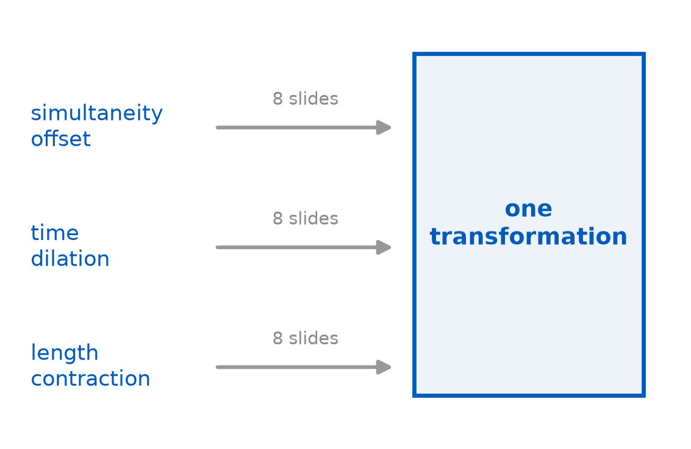
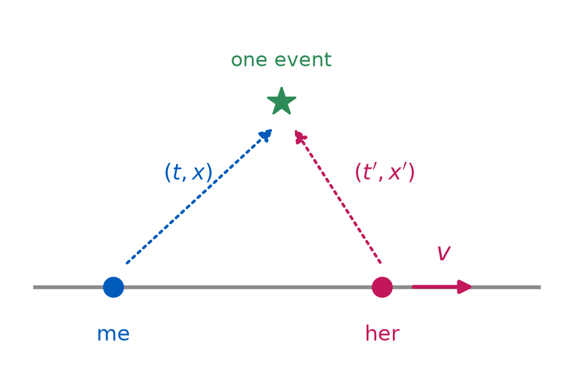
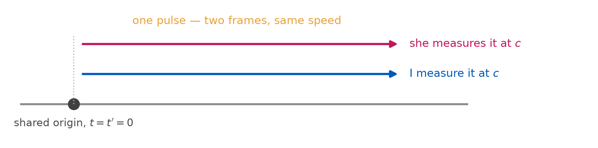
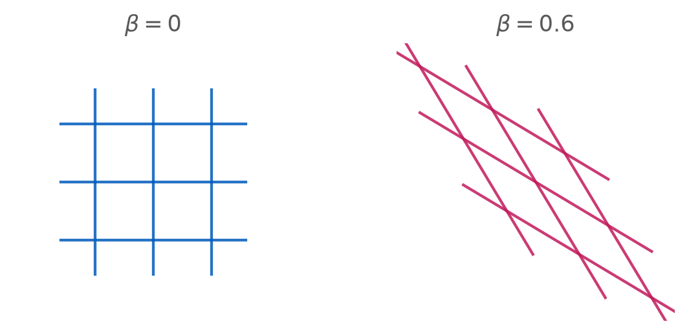
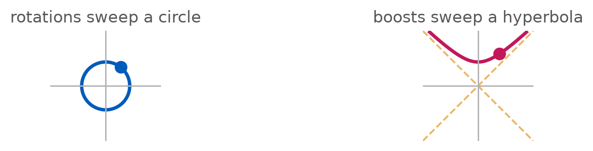
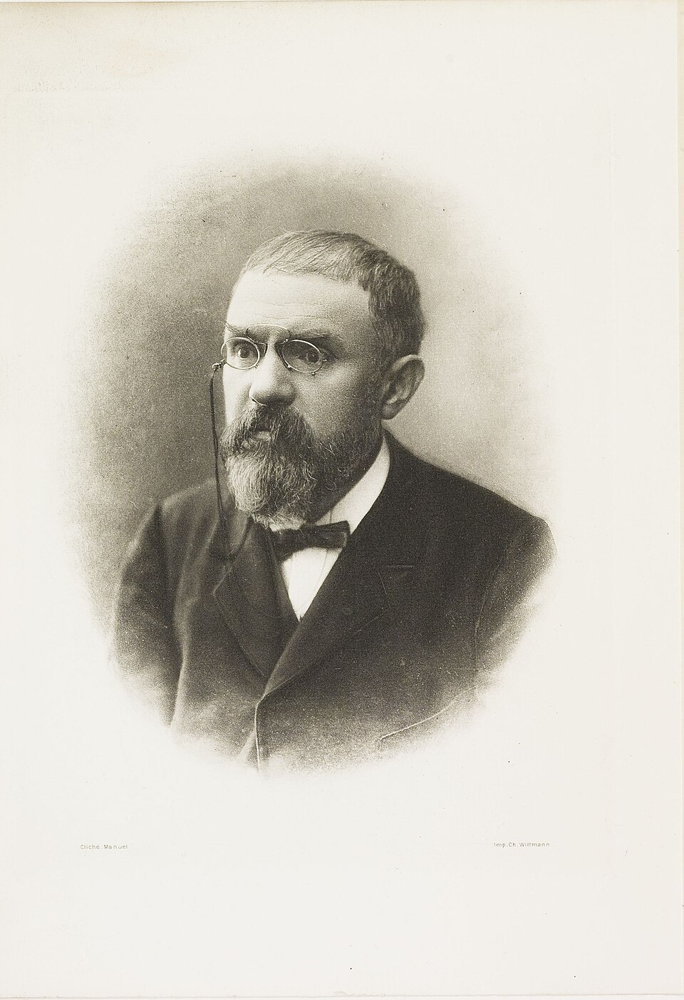

The Lorentz Transformation
PHY 208 · Special Relativity · Lecture 7
Tim Thomay
2026-09-15
Before we start
Prep check 3 was due 10:30 — dilation and contraction.
Problem set 2 closed Sunday; solutions go up tonight. Problem set 3 posts today, due Sun Sep 20: the first set where the transformation does the work.
Milestone 1 — due Tue Sep 29. That is two weeks out. Start it.
Thursday’s exit ticket
“At \(0.87c\) a spaceship is measured at half its length, so the hull must be squeezed under enormous stress.”
Most of you got it: no stress, no strain, every gauge on board reads zero, and the shorter number is still a correct measurement.
The overcorrection to watch: “so it only looks shorter.” No. It is measured shorter — measurement is all “is” ever meant.
Six lectures, one line
We have spent three weeks arguing in words and triangles.
The results are real. The method does not scale.
Today: the algebra that does all of it at once, derived, not asserted.
What the transformation has to do
Given an event at \((t, x)\) in my frame, return \((t', x')\) in hers, where she moves at \(v\) along \(x\).
| it must | because |
|---|---|
| be linear | uniform motion stays uniform motion in every inertial frame |
| send \(x = vt \to x' = 0\) | her origin is at rest in her frame, by definition |
| send \(x = ct \to x' = ct'\) | postulate 2: light is \(c\) for both of us |
| reduce to \(x' = x - vt\) when \(v \ll c\) | Newton works, and we must reproduce him |
Two lines of algebra
Linearity plus “her origin has \(x' = 0\)” forces the form
\[x' = \gamma\,(x - vt)\]
for some \(\gamma\) that may depend on \(v\) but not on \(x\) or \(t\).

By postulate 1, her view of me is the same law with \(v \to -v\):
\[x = \gamma\,(x' + vt')\]
The same \(\gamma\) — neither of us is the one “really moving”.
Now let light do the work

Both of us must measure that pulse at \(c\): \(x = ct\) and \(x' = ct'\).
Substitute both into the pair of equations, multiply them together, and every reference to the pulse cancels:
\[\gamma^{2}\left(1 - \frac{v^{2}}{c^{2}}\right) = 1 \qquad\Longrightarrow\qquad \boxed{\;\gamma = \frac{1}{\sqrt{1 - v^{2}/c^{2}}}\;}\]
The transformation, both directions
Hers, from mine
\[x' = \gamma\,(x - vt)\] \[t' = \gamma\left(t - \frac{vx}{c^{2}}\right)\]
Mine, from hers
\[x = \gamma\,(x' + vt')\] \[t = \gamma\left(t' + \frac{vx'}{c^{2}}\right)\]
The \(-vx/c^{2}\) in the time equation is the relativity of simultaneity, sitting in the algebra where L04 spent a lecture putting it by hand.
The crank, turned three times
| set | and you get | which is |
|---|---|---|
| \(\Delta x = 0\) (one clock, two ticks) | \(\Delta t' = \gamma\,\Delta t\) | time dilation |
| \(\Delta t' = 0\) (endpoints at once, her frame) | \(\Delta x = \Delta x'/\gamma\) | length contraction |
| \(\Delta t = 0\) (simultaneous for me) | \(\Delta t' = -\gamma v\,\Delta x/c^{2}\) | simultaneity offset |
Three weeks of argument, three substitutions. The physics did not change, the bookkeeping did.
Velocity addition, and the wall at \(c\)
An object moves at \(u'\) in her frame. In mine:
\[u = \frac{u' + v}{1 + u'v/c^{2}}\]
0.5c + 0.5c -> 0.800000c
0.9c + 0.9c -> 0.994475c
0.99c + 0.99c -> 0.999949c
light + 0.5c -> 1.000000cNothing you can do gets past \(c\), and light plus anything is still exactly \(c\). The wall is not a rule added on top — it falls out of the algebra.
Where Newton went

The matrix
Write the coordinates as a column, and the transformation is one object acting on it.
If you have taken MTH 309, everything on the next four slides is vocabulary you already own.
If you have not, this is what that course is for.

The boost, as a matrix
Use \(ct\) rather than \(t\), so both entries carry units of length:
\[\begin{pmatrix} ct' \\ x' \end{pmatrix} = \gamma\begin{pmatrix} 1 & -\beta \\ -\beta & 1 \end{pmatrix} \begin{pmatrix} ct \\ x \end{pmatrix}, \qquad \beta = \frac{v}{c}\]
Multiply out the top row:
\(ct' = \gamma(ct - \beta x) = \gamma(ct - vx/c)\).
Divide by \(c\) — the time equation from twenty minutes ago.

Set it beside a rotation
Rotation in the \((x, y)\) plane
\[R = \begin{pmatrix} \cos\theta & -\sin\theta \\ \sin\theta & \phantom{-}\cos\theta \end{pmatrix}\]
Preserves \(x^{2} + y^{2}\).
Boost in the \((ct, x)\) plane
\[\Lambda = \begin{pmatrix} \cosh\phi & -\sinh\phi \\ -\sinh\phi & \phantom{-}\cosh\phi \end{pmatrix}\]
Preserves something we name on Thursday.

\(\gamma = \cosh\phi\) and \(\gamma\beta = \sinh\phi\). Same structure — one sign, flipped.
Composing boosts is matrix multiplication
boost(0.6) then boost(0.7) -> combined beta = 0.915493
velocity-addition formula -> 0.915493
Galileo would have said -> 1.300000 (faster than light)Two boosts multiply to one boost, and the speed that comes out is exactly the velocity-addition formula. It was matrix multiplication all along.
What the matrix makes obvious
| in equations | in matrices |
|---|---|
| four coupled relations to keep straight | one object, four entries |
| “combine two boosts” — messy substitution | multiply, then read off |
| “does it ever exceed \(c\)?” — case analysis | closure: boost × boost = boost |
| inverse: flip \(v\), re-derive | \(\Lambda(-\beta)\), and \(\Lambda(-\beta)\Lambda(\beta) = I\) |
Your turn: get your week back
In your pairs. One result each, then swap and check.
Start from \[t' = \gamma\left(t - \frac{vx}{c^{2}}\right),\quad x' = \gamma(x - vt)\]
Left side of the room — time dilation. Two ticks of her clock, same place in her frame. Set \(\Delta x' = 0\), find \(\Delta t\).
Middle — length contraction. Her rod, endpoints marked at once in my frame. Set \(\Delta t = 0\), find \(\Delta x\) in terms of \(\Delta x'\).
Right side — the lightning offset. Two strikes simultaneous for me, \(\Delta t = 0\), separated by \(\Delta x = L\). Find \(\Delta t'\), and say which strike she says came first.
Then: trade with a pair from a different third and check their line.
Two events are simultaneous in my frame, separated by 600 m along the direction of her motion. She flies past at 0.6c.
In her frame, which event happens first, and does the answer depend on her speed?
(a) The event at larger x comes first, and faster makes the gap larger
(b) The event at smaller x comes first, and faster makes the gap larger
(c) They are still simultaneous, since zero transforms to zero
(d) The order depends on her speed: below some speed one comes first, above it the other
The answer, and the number
gamma at 0.6c = 1.250
dt' = -g*v*dx/c^2 = -1.501 us
so the event at LARGER x is earlier for her, by 1.501 us
at 0.3c: gap = 0.629 us (grows, never flips)
at 0.6c: gap = 1.501 us (grows, never flips)
at 0.9c: gap = 4.132 us (grows, never flips)The sign is set by the direction of her motion, not its size. Faster only means further apart, never reversed.
The man who wrote it first
1904: Lorentz publishes these equations, essentially in this form. 1905: Poincaré names them the Lorentz transformation and shows they form a group.
Both had the mathematics. Both kept the ether, and read \(t'\) as a convenient fiction — “local time” — with the real time still ticking somewhere underneath.


Thursday
The invariant interval
| The question left open | rotations preserve length — what does a boost preserve? |
| The answer | one number every frame agrees on, and you will find it |
| Bring | a laptop or a phone, one per pair |
| Prep check 4 | due Tue Sep 22 — transformation & interval |
Exit ticket
Starting from \(t' = \gamma\left(t - vx/c^{2}\right)\):
Why does the position \(x\) appear in an equation for time? What would be different if that term were not there?
Scan it, or find it on UB Learns. Due 11:59 tonight.
Not graded, ever — I read these to decide what to spend class time on. “I don’t follow this, and here is where I lost it” is a useful answer.
PHY 208 — The Lorentz Transformation Tim Thomay · University at Buffalo · Fall 2026
Course material licensed CC BY-SA 4.0
Images retain their original licenses — see img/CREDITS.md